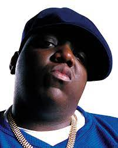

The Notorious B.I.G
Hip-Hop Artist
Christopher George Latore Wallace better known by his stage names the Notorious B.I.G., Biggie Smalls, or simply Biggie, was an American rapper and songwriter. Rooted in East Coast hip hop and particularly gangsta rap, he is widely considered one of the greatest rappers of all time. Wallace became known for his distinctive laid-back lyrical delivery, offsetting the lyrics' often grim content. His music was often semi-autobiographical, telling of hardship and criminality, but also of debauchery and celebration.
247 | 128 Albums
01

Juicy
The Notorious B.I.G
02
Big Poppa
The Notorious B.I.G
03
Thief
The Notorious B.I.G
04
Thief
The Notorious B.I.G
05
Thief
The Notorious B.I.G
06
Thief
The Notorious B.I.G
07
Thief
The Notorious B.I.G